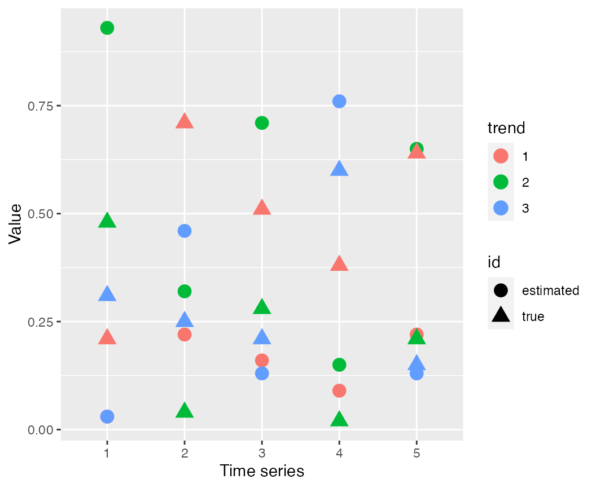

Fitting compositional dynamic factor models with bayesdfa
Eric J. Ward, Sean C. Anderson, Mary E. Hunsicker, Mike A. Litzow, Luis A. Damiano, Mark D. Scheuerell, Elizabeth E. Holmes, Nick Tolimieri
2024-10-18
Source:vignettes/a6_compositional.Rmd
a6_compositional.RmdAn extension of conventional DFA is to change the constraints on the estimated loadings, \(Z\). DFA models generally impose constraints for identifiability, where individual time series are allowed to map onto dynamic factors with loadings ranging from large negative to large positive ones. Instead, if we viewed a collection of multivariate time series as originating from a compositional model - such that the loadings \(Z\) were forced to be positive, and each of the time series arises as a mixture of the estimated loadings.
Let’s load the necessary packages:
2 - trend model
First, let’s simulate some data. The compositional DFA model is not interesting with a single trend, so we’ll initially start with 2 trends. We’ll use the sim_dfa function to simulate the random walks (assuming 20 time steps, and 2 latent trends).
Next, we can create some compositional loadings for the mixture. These could random (e.g. using ‘rdirichlet’), but we’ll pass in known values.
m = matrix(0, nrow=5,ncol=2)
m[1,] = c(0.8, 0.2) # time series # 1 is 80% trend 1
m[2,] = c(0.9, 0.1) # time series # 2 is 90% trend 1
m[3,] = c(0.3, 0.7) # time series # 3 is 30% trend 1
m[4,] = c(0.35, 0.65) # time series # 4 is 35% trend 1
m[5,] = c(0.7, 0.2) # time series # 5 is 70% trend 1Using the simulated trends and compositional data \(m\), we can now create the simulated data,
pred = m%*%s$x
y = pred + matrix(rnorm(nrow(pred)*ncol(pred),0,0.1), nrow=nrow(pred), ncol = ncol(pred))Next, we can pass this data to the fit_dfa() function and try to recover our known loadings. Note: the compositional model has a nasty label-switching issue that our ‘chain flipping’ function doesn’t handle well. Multiple chains may be run, but need to be examined to evaluate whether they need to be flipped. To avoid that situation, we’ll just use a single chain.
fit <- fit_dfa(y = y, iter = iter, chains = chains, num_trends = 2, seed = 42,
z_model = "proportion",scale="center")We can’t rotate the Z matrix – because the compositional constraint would be destroyed. Other than the loadings on time series 3 and 4, these loadings are close to those in the simualting model,
pars = rstan::extract(fit$model,permuted=TRUE)
rounded_Z = round(apply(pars$Z,c(2,3),mean),2)
print(rounded_Z[,c(2,1)])##
## [,1] [,2]
## [1,] 0.98 0.02
## [2,] 0.97 0.03
## [3,] 0.01 0.99
## [4,] 0.18 0.82
## [5,] 0.76 0.24Combining the estimated trends and true trends in the simulation shows that the trends are offset by an intercept, but track the overall simulated values very well (time series 1 represents the estimated trend trying to recover the true trend indicated with time series 3, time series 2 represents the estimated trend trying to recover the true trend indicated with time series 4)

3 - trend model
We can extend this approach to also include a model with 3 trends,
Next, we can create some compositional loadings for the mixture. These could random (e.g. using ‘rdirichlet’), but we’ll pass in known values.
m = matrix(0, nrow=5,ncol=3)
m[1,] = c(0.31, 0.48,0.21) # time series # 1
m[2,] = c(0.25, 0.04, 0.71) # time series # 2
m[3,] = c(0.21, 0.28, 0.51) # time series # 3
m[4,] = c(0.6, 0.02, 0.38) # time series # 4
m[5,] = c(0.15, 0.21, 0.64) # time series # 5Add observation error
pred = m%*%s$x
y = pred + matrix(rnorm(nrow(pred)*ncol(pred),0,0.01), nrow=nrow(pred), ncol = ncol(pred))Next we can fit the compositional DFA model,
fit <- fit_dfa(y = y, iter = iter, chains = chains, num_trends = 3, seed = 42,
z_model = "proportion",scale="center")We can look at the true values of the loadings (open triangles) and estimated values (solid circles) to see that for some of the loadings, the model estimates the parameters well.
